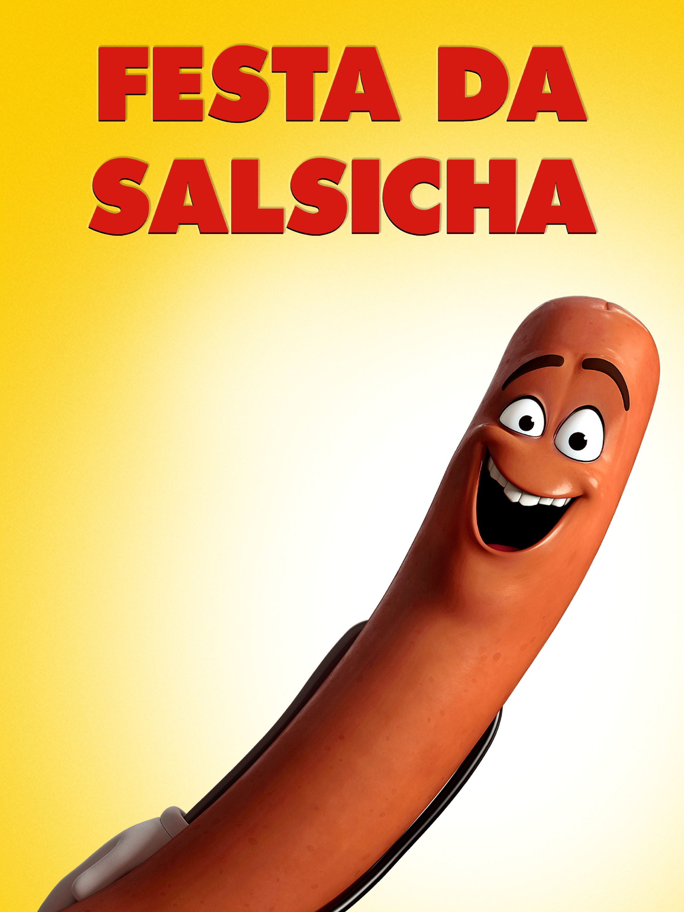

Festa da Salsicha
Filme de comedia e humor acido

Sinopse
Em Festa da Salsicha, dentro de um supermercado, os alimentos pensam que as pessoas são deuses. Eles sonham em serem escolhidos por elas e serem levados para suas casas, onde pensam que viverão felizes. Mas eles nem suspeitam que serão cortados, ralados, cozidos e devorados! Quando Frank, uma salsicha, descobre a terrível verdade, ele precisa convencer os outros alimentos do supermecado e fazer com que eles lutem contra os humanos.
Informações
Gênero: humor ácido
Ano: 2016
Duração: 1h 29m
Avaliação: 6.1/10
Elenco principal
- Seth rogem: Frank (Salsicha)
- Kristen Wiing: Brenda (Pão de Cachorro quente)
- David Krumholtz: Lavassh(Pão arabe)
- Edward Norton: Sammy Bagel (O bagel judeu)
Sobre o Filme
É uma comédia ácida que fez história no cinema. Ele foi a primeira animação digital em 3D a receber uma classificação indicativa estritamente adulta
Assista o Trailer!